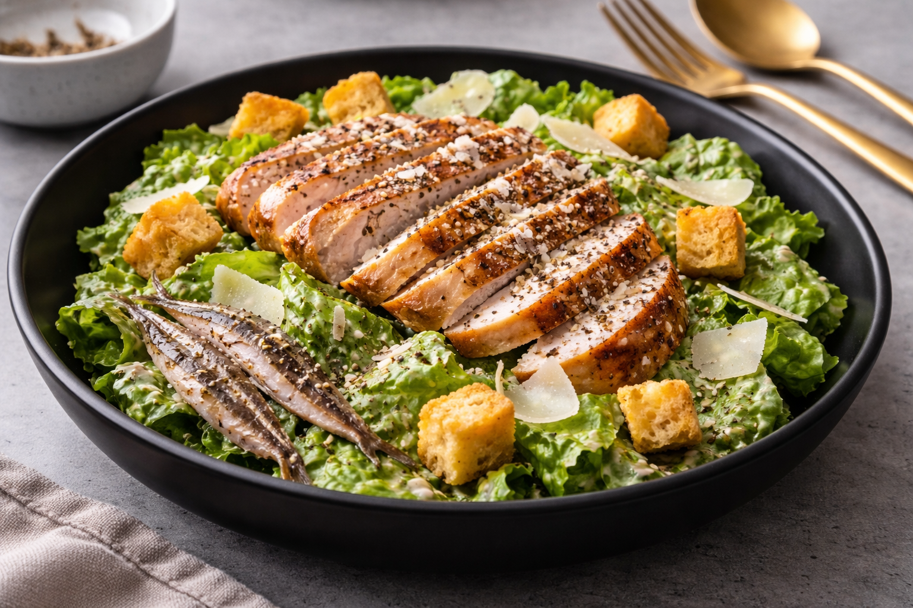

A modern take on a classic Caesar salad, this dish features crisp romaine lettuce tossed in a creamy, savory Caesar dressing and topped with perfectly grilled, sliced chicken breast. Finished with freshly shaved Parmesan cheese, crunchy golden croutons, and a generous sprinkle of cracked black pepper, each bite delivers a balance of texture and bold flavor. Delicately placed anchovies on the side add a traditional, briny depth for those who appreciate the authentic Caesar experience. Presented in sleek, contemporary dishware, this salad is both elevated and satisfying.
ENJOY!